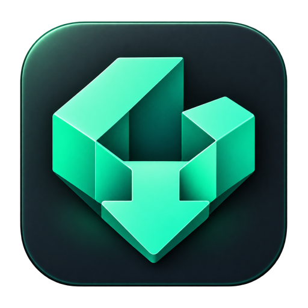
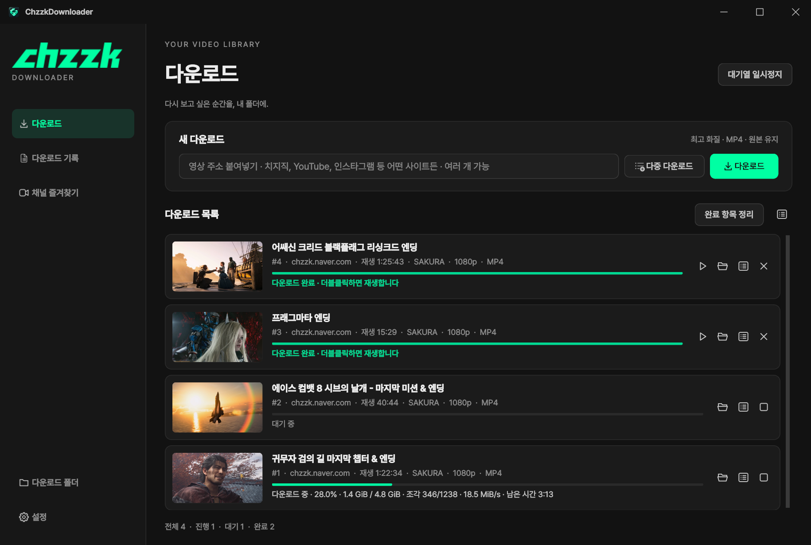
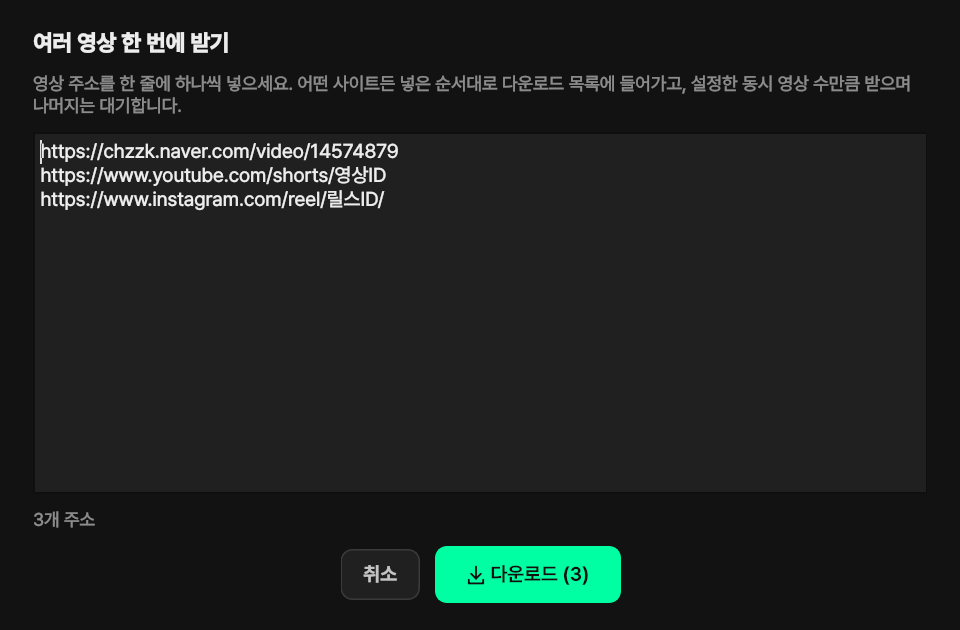
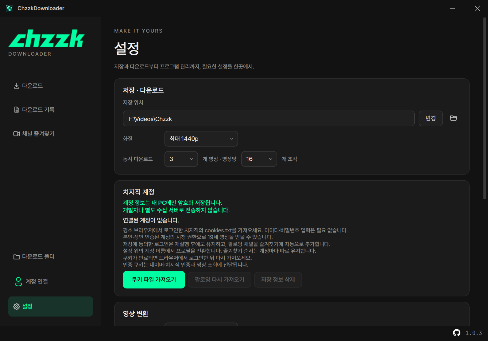
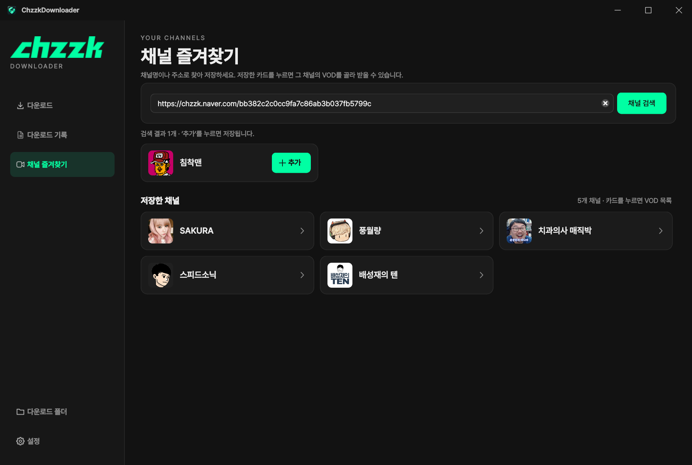
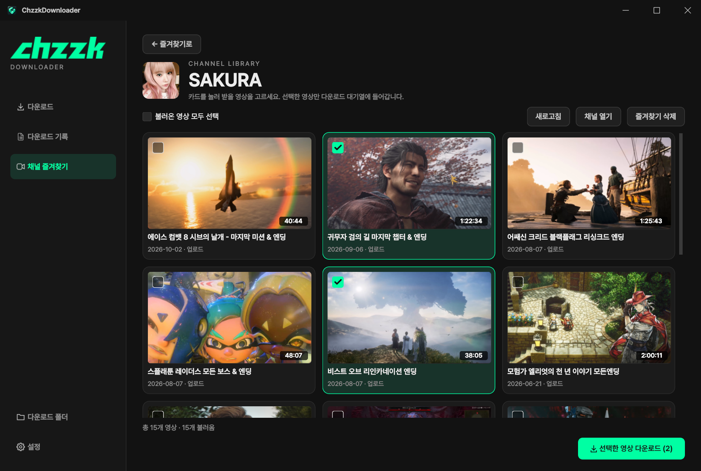
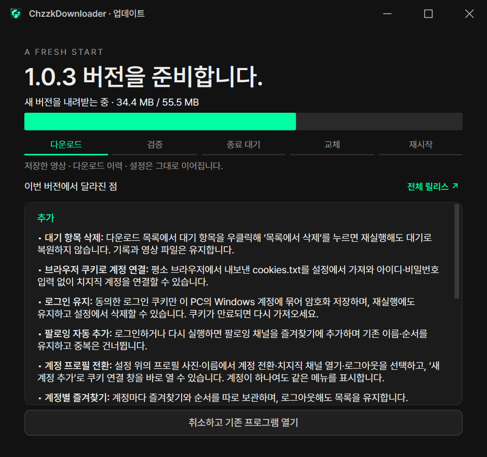

붙여넣는 순간.
라이브러리의 시작.
한 개의 링크부터 여러 개의 다시보기까지.
‘다중 다운로드’에 한 줄씩 넣고,
입력한 순서대로 목록에 추가하세요.

ChzzkDownloaderCHZZK & ANY VIDEO URL DOWNLOADER
긴 다시보기도, 짧은 클립도.
링크를 붙여넣으면 나만의 영상 라이브러리가 시작됩니다.
Windows 데스크톱 · 1.0.0 · 폴더형 포터블 앱
ChzzkDownloader_v100.zip · 배포 파일은 GitHub 정식 릴리스에서 제공합니다.
THREE STEPS. YOUR LIBRARY.
ChzzkDownloader_v100.zip을 풀고 폴더 구조를 유지한 채 ChzzkDownloader.exe를 실행합니다. lib·bin 폴더는 EXE와 함께 두세요.
사이드바 맨 아래 ‘설정’에서 저장 위치·화질·인코딩·동시 다운로드 수를 정합니다. 저장 위치는 다음 실행에도 유지됩니다.
영상 주소를 붙여넣고 ‘다운로드’를 누르세요. 여러 영상은 ‘다중 다운로드’ 창에 한 줄씩 넣습니다. 이번 실행의 완료 영상은 다운로드 목록에서 바로 재생할 수 있습니다.
BUILT FOR YOUR MOMENTS.
SCROLL TO EXPLORESMALL DETAILS. BETTER DOWNLOADS.
치지직 VOD·클립은 물론 YouTube·인스타그램 등 어떤 사이트의 영상 주소든 붙여넣으세요. ‘다중 다운로드’ 창에 주소를 한 줄씩 넣어 한 번에 추가하거나, 브라우저에서 끌어놓을 수 있습니다.
ANY VIDEO URL최고 화질 또는 원하는 해상도 상한을 선택하세요. MP4로 저장합니다. 원본 유지 또는 CPU/NVIDIA NVENC 인코딩, H.264(AVC)/H.265(HEVC)를 선택하세요.
MP4 · AVC / HEVC최대 4개 영상과 영상당 최대 16개 조각을 동시에 다운로드합니다. 진행률과 전송 속도, 남은 시간을 카드에서 확인하세요.
PARALLEL DOWNLOADS이번 실행의 완료 영상은 다운로드 목록에서 재생하거나 더블클릭하세요. ‘완료 항목 정리’로 숨겨도 영상과 기록은 남습니다. 이전 실행의 작업·실패·취소 항목은 다운로드 기록에서 확인합니다.
DOWNLOAD HISTORY대기열을 멈추면 진행 중인 영상은 계속 받고 다음 작업의 시작을 기다립니다. 실패한 작업은 한 번에 재시도하세요.
QUEUE CONTROL영상 제목 그대로 저장하고 같은 이름이 있으면 번호를 붙입니다. 목록 정리와 다운로드 취소에도 이미 완성한 파일은 보존됩니다.
LOCAL FIRST창을 숨겨도 다운로드는 계속됩니다. 트레이 메뉴에서 대기열을 멈추거나 재개하고, 완료 알림으로 다시 돌아오세요.
SYSTEM TRAY새 버전의 추가·변경·수정 내역을 먼저 보여 줍니다. ‘지금 업데이트’를 선택하면 다운로드가 끝난 뒤 같은 프로그램의 독립 업데이트 모드가 배포 파일을 검증하고 프로그램을 교체합니다.
INDEPENDENT UPDATER원본 유지가 기본입니다. 변환이 필요할 때 CPU/NVENC와 AVC/HEVC를 선택하세요. 변환 실패·취소 시 다운로드한 원본은 보존합니다.
AVC / HEVC채널명이나 주소로 검색해 즐겨찾기에 저장하세요. 채널 카드를 누르면 VOD를 썸네일·제목·날짜로 확인하고 원하는 영상만 선택해 받을 수 있습니다.
CHANNEL FAVORITES첫 실행에 없는 FFmpeg·ffprobe를 자동으로 준비합니다. 작업이 끝난 뒤 설정의 ‘도구 업데이트’를 누르면 최신 FFmpeg와 yt-dlp nightly를 검증하고 다음 다운로드부터 적용합니다.
FFMPEG · YT-DLP NIGHTLYA CALMER WAY TO DOWNLOAD

실제 앱 인터페이스 · 작업 내용은 화면 소개를 위한 예시입니다.
MORE LINKS. ONE LIST.
다운로드 화면의 ‘다중 다운로드’를 누르고 주소를 한 줄에 하나씩 넣으세요. 주소 개수를 확인한 뒤 ‘다운로드 (개수)’를 누르면 입력한 순서대로 목록에 추가됩니다.
중복 주소와 주소가 아닌 입력은 건너뜁니다. 설정한 동시 영상 수만큼 받고, 나머지는 대기합니다.

SET IT ONCE.
사이드바 맨 아래의 ‘설정’에서 저장 위치, 화질, 인코딩, 동시 다운로드 수, 트레이와 업데이트를 정하세요. 저장 위치를 바꾸면 다음 실행에도 유지됩니다. 첫 실행에는 없는 영상 도구를 인터넷으로 자동 준비하며, ‘도구 업데이트’로 최신 FFmpeg·yt-dlp nightly를 받을 수 있습니다.
기존 yt-dlp 지원 사이트도 함께 사용할 수 있습니다. 사이트의 변경이나 계정 접근 조건에 따라 다운로드 가능 여부가 달라질 수 있습니다.

YOUR CHANNELS. YOUR PICKS.
‘채널 즐겨찾기’에서 채널명이나 주소로 찾아 ‘추가’를 누르세요. 저장한 카드를 누르면 그 채널의 VOD가 썸네일·제목·날짜와 함께 펼쳐지고, 원하는 영상만 골라 바로 받을 수 있습니다.


실제 앱 인터페이스 · 채널과 VOD 정보는 공개 목록 예시이며, 작업 상태는 화면 소개를 위한 예시입니다.
ALWAYS UP TO DATE.
시작할 때 GitHub의 정식 릴리스를 확인합니다. 처음 뜨는 안내창에서 추가·변경·수정 내역을 읽고 ‘지금 업데이트’ 또는 ‘나중에’를 선택하세요. 설치를 고르면 진행 중인 다운로드가 끝난 뒤 업데이트 창이 이어받아 새 버전을 준비합니다.
저장한 영상 · 다운로드 기록 · 설정 · 채널 즐겨찾기는 바꾸지 않습니다. ‘설정 → 업데이트 확인’으로 직접 확인할 수도 있습니다.

영상이 있는 페이지의 주소라면 사이트를 가리지 않고 분석해 받습니다. 치지직은 https://chzzk.naver.com/video/번호 VOD 주소나 https://chzzk.naver.com/clips/ID 클립 주소, 그 밖에 YouTube(쇼츠)·인스타그램 릴스 등의 개별 영상 주소를 입력하세요. 여러 주소는 ‘다중 다운로드’ 창에 한 줄씩 넣으세요. 채널에서 고르려면 ‘채널 즐겨찾기’에 저장한 뒤 VOD 카드를 선택하세요.
채널명 또는 https://chzzk.naver.com/채널ID 주소로 검색해 결과 카드의 ‘추가’를 누릅니다. 저장한 카드를 누르면 공개 VOD가 썸네일·제목·날짜 카드로 표시되고, 카드를 눌러 선택한 영상만 다운로드합니다.
공개 영상만 지원합니다. 연령 확인이 필요하거나 구독자 전용인 영상은 받을 수 없습니다.
대기열 일시정지는 새로운 영상의 시작을 멈춥니다. 진행 중인 영상은 계속 다운로드하며, 해당 영상의 취소 버튼으로 중단할 수 있습니다.
다운로드 기록에서 해당 항목과 미리보기 캐시만 제거합니다. 저장 폴더의 영상 파일은 유지됩니다.
READY WHEN YOU ARE.